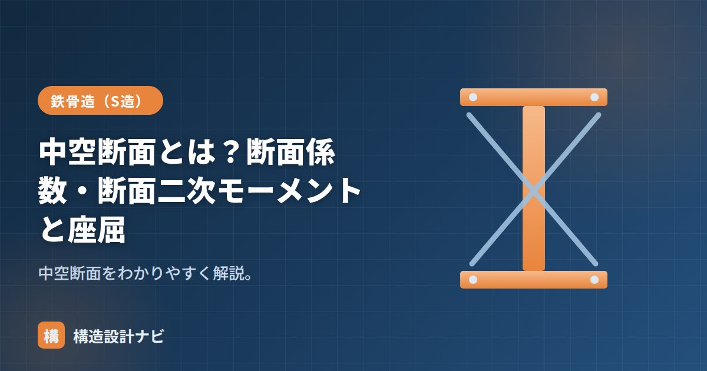

中空断面とは？断面係数・断面二次モーメントと座屈

中空断面（ちゅうくうだんめん、英語：hollow section）とは、断面の中心部が空洞になっている断面形状のことで、円形鋼管（丸パイプ）や角形鋼管（角パイプ）が代表例です。対になる言葉は「中身が詰まった」中実断面です。中空断面は同じ断面積（＝同じ重さ・コスト）であっても、材料を外周部に集中配置できるため曲げ・座屈に対して効率よく強いのが特徴で、鉄骨造の柱や、トラス・ブレースの部材として広く使われています。
- 中空断面は材料を外周に集めた構造で、断面二次モーメントを効率よく稼げる
- 円形は I=π(D⁴−d⁴)/64、角形は I=(BH³−bh³)/12 で計算できる
- 座屈に強い一方、肉厚が薄いと管壁自体がへこむ局部座屈に注意が必要
中空断面が強い理由
曲げや座屈への強さは、材料が中立軸からどれだけ外側に分布しているかで決まります。断面二次モーメントIは断面の各微小面積に「中立軸からの距離の2乗」を掛けて足し合わせたものなので、同じ面積でも中心から離れた位置に材料があるほどIは大きくなります。中空断面は材料を外周にまとめて配置するため、中実断面より断面二次モーメントIを大きくでき、同じ断面積（重さ）でも効率的です。逆に言えば、中実の丸棒や角材は中心付近の材料があまり強度に寄与しておらず、「無駄」になりやすいとも言えます。
断面二次モーメント・断面係数の計算
円形中空断面（外径D、内径d）の場合：
角形（箱型）中空断面（外形B×H、空洞b×h）の場合：
いずれも「外形の値 − 空洞の値」で求めます（詳しくは箱型断面）。例えば外径D=100mm、肉厚6mm（内径d=88mm）の円形鋼管であれば、I=π(100⁴−88⁴)/64≒231万mm⁴となり、同じ外径の中実丸棒（I=π×100⁴/64≒491万mm⁴）より小さいものの、断面積は中実の約4割程度に抑えられます。つまり少ない材料で高い剛性・強度を得られる、という点が中空断面の本質的なメリットです。
中実断面との比較
| 項目 | 中空断面 | 中実断面 |
|---|---|---|
| 断面積あたりの効率 | 高い（外周に材料が集中） | 低い（中心の材料が余りがち） |
| 座屈への強さ | 断面二次半径が大きく強い | 相対的に弱い |
| 弱点 | 肉厚が薄いと局部座屈が生じやすい | 局部座屈は起きにくい |
| 代表例 | 円形鋼管・角形鋼管 | 丸鋼・平鋼・鉄筋 |
座屈への影響
柱の座屈のしにくさは断面二次半径 i＝√(I/A)で効いてきます。中空断面はAが同じでもIが大きいのでiが大きく、細長比が小さくなって座屈しにくい。これが柱に鋼管（中空断面）が好まれる理由です。ただし管の肉厚が薄すぎると、管壁が局部的に座屈する局部座屈に注意が必要です。
中空断面は座屈に強い反面、開口部を設けたり溶接で断面欠損を作ったりすると、その部分から局部的な変形が進行しやすくなります。設計時には板厚と外径・辺長の比（径厚比・幅厚比）が告示等で定める制限値の範囲内にあるかを必ず確認します。
よくある質問
Q1. 中空断面と閉断面は同じ意味ですか？
ほぼ同じ意味で使われますが、厳密には「閉断面」は断面の輪郭が一周閉じていることを指す言葉で、中が空洞かどうかとは別の概念です。円形鋼管・角形鋼管はどちらの条件も満たすため、中空断面かつ閉断面と呼ばれます。詳しくは閉断面の記事もご覧ください。
Q2. なぜ柱には角形鋼管がよく使われるのですか？
角形鋼管はどの方向にも同程度の断面二次モーメントを持つため、地震や風など水平力が様々な方向から作用する柱に適しています。加えて梁との接合部の納まりが平面的に作りやすく、意匠上もすっきりした角柱にできることが実務で好まれる理由です。
角形鋼管を柱に使う設計で、径厚比・幅厚比が制限値ぎりぎりになっている図面に出会うと、局部座屈の余裕度を再確認するようにしている。数値上は満足していても、溶接による断面欠損が絡む箇所は特に注意深く見ている。
まとめ
- 中空断面は中が空洞の断面（鋼管）。材料を外周に集め効率的に強い。
- 円形は I=π(D⁴−d⁴)/64、角形は I=(BH³−bh³)/12 で計算。
- 同じ断面積の中実断面と比べ、剛性・強度を効率よく確保できる。
- 断面二次半径が大きく座屈に強いが、肉厚が薄いと局部座屈に注意。